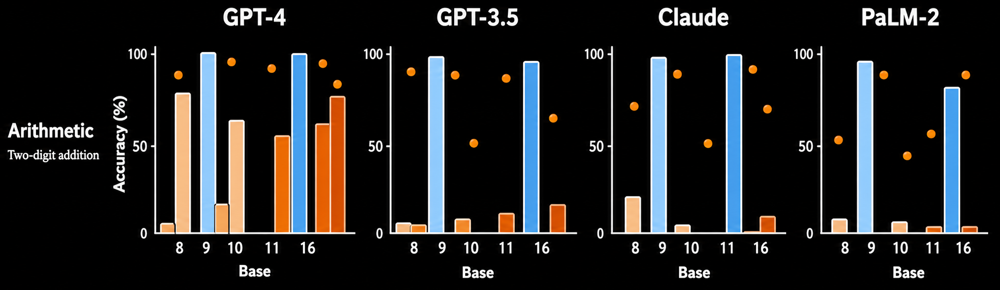
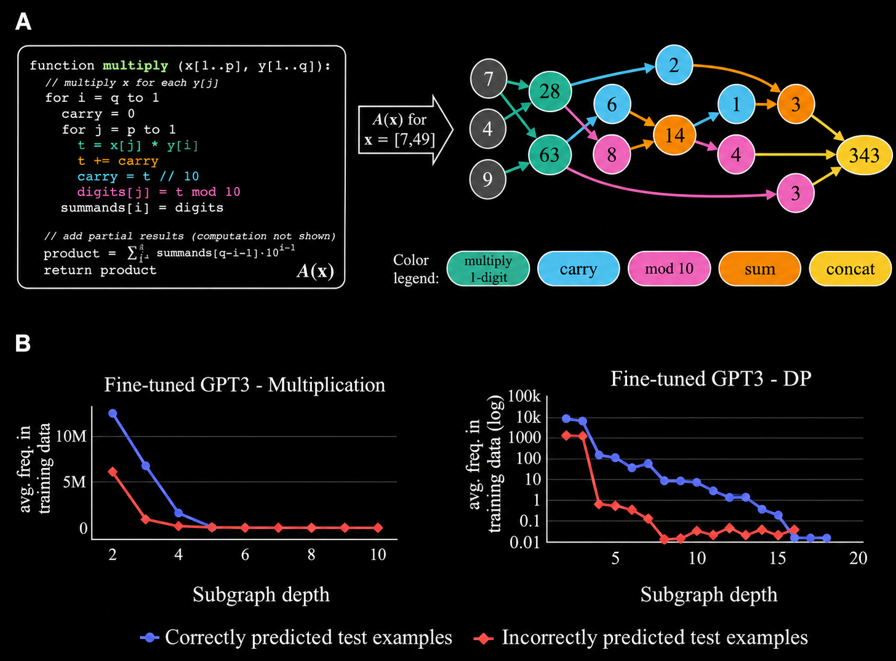
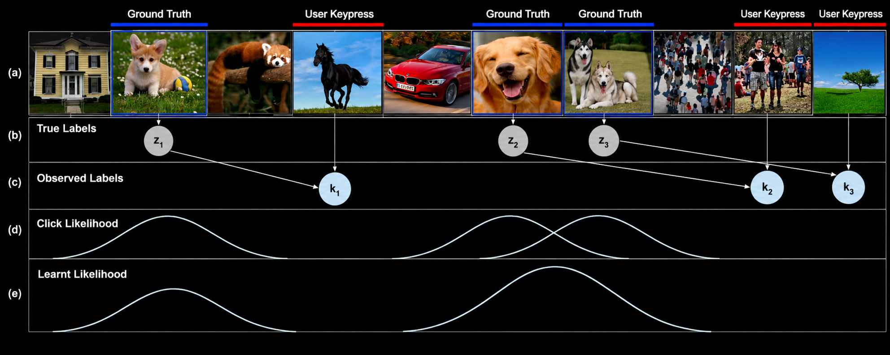

Enhancing reasoning
Dziri et al. (2023)
Large language models rely heavily on statistical pattern matching instead of strict logical inference. When subjected to counterfactual modifications, such as executing arithmetic in bases other than base 10, or identifying spatial object coordinates when orientation axes are swapped, rotated, or randomly permuted—prominent models such as GPT-4, GPT-3.5, Claude, and PaLM-2 suffer severe performance degradation. Further examination shows when algorithms are represented as computational graphs, models would reduce multistep reasoning computational graphs into subgraph pattern matching.


Chain-of-Thought (CoT) prompting mitigates this logic gap by encouraging step-by-step logical reasoning instead of rote recitation. Performance evaluations across word manipulation operations underscore massive performance jumps moving from zero-shot environments to few-shot reasoning regimens.
| Prompt Setting Context | CL (Cycle Letters) | A1 (Anagram Mid-1) | A2 (Anagram Mid-2) | RI (Random Insert) | RW (Reverse Words) |
|---|---|---|---|---|---|
| GPT-3 Zero-Shot | 3.66% | 2.28% | 8.91% | 8.26% | 0.09% |
| GPT-3 Few-Shot | 37.90% | 15.10% | 39.70% | 67.20% | 0.44% |
Handling complex tasks
Zhang & Zhang (2024)
When deployed on long-horizon, complex tasks such as web navigation, multistep installation, or multi-app manipulation, large language models tend to lose sight of their ultimate objectives, struggle to maintain consistent behavior, and fail to complete the task. By implementing behavioral cloning architecture to mimic sequential human actions, models achieve stark improvements in success rates. A previously studied behavioral cloning (BC) model achieved about twice as high success rate as finetuned models such as Llama and PaLM.
Turning wrong labels into right labels
Erroneous labels can be turned into correct labels algorithmically. In Krishna et al. (2016), when a human annotator sees an image that is displayed for 400 ms alongside a binary question, the annotator is asked to press the spacebar when the answer is "Yes" to the question. For each keypress, the model creates as a Gaussian probability distribution of an image being correctly identified about 400ms before the keypress. The model then uses the keypress latency to predict the correct labels.

By mapping each individual keystroke action delay as a Gaussian distribution 𝒩(𝜇, 𝜎), labeling inaccuracies are programmatically transformed into ground-truth data. Furthermore, this method is 6 to 11 orders of magnitude faster than the known majority voting approach.